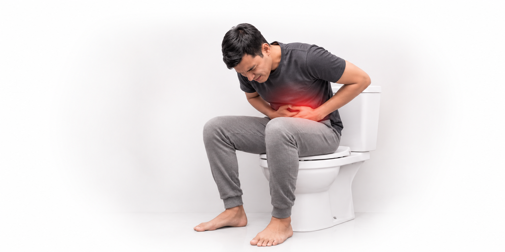

Pain while passing stool is common, and it tells you that something in the anus or rectum needs attention. The pain may be sharp, burning or throbbing. It may come during the movement, last for hours afterwards, or come with bleeding or a lump.
The cause decides the treatment, and the first step is to find it. Dr. Pradipkumar Tupere, a proctologist and general surgeon at Navoday Clinic in Kharadi, Pune, examines you, finds the cause and explains your options before any treatment is advised.
Book Appointment Call or WhatsApp
At a glance
| Topic | In brief |
|---|---|
| What it is | Pain in or around the anus while passing stool, or for some time afterwards. |
| Common causes | An anal fissure, piles, an abscess or fistula, a narrowed anal canal, tight muscles, an infection and, rarely, a growth. |
| What it can feel like | Sharp or burning with a fissure, a tender lump with a swollen pile, throbbing with an abscess. |
| See a doctor if | The pain lasts more than a few days or keeps coming back, comes with blood, a lump, swelling or fever, or makes you avoid the toilet. |
| Who treats it | A proctologist or general surgeon, when the pain comes from the anus or rectum. |
| Where | Navoday Clinic, Kharadi, Pune. |
What the pain can feel like
The kind of pain gives a clue to the cause, but a clue is not a diagnosis. These patterns are common:
| What you notice | What it may point to |
|---|---|
| Sharp, cutting or burning pain during the movement that can last for hours, often with a little bright red blood on the paper | An anal fissure. |
| Pain with a tender lump at the anal opening | A swollen or clotted pile. |
| Throbbing pain that builds over a day or two, with swelling, redness or fever | An abscess near the anus. |
| Pain with repeated discharge, a boil or a small opening near the anus | A fistula. |
| Pain with a tight, narrow feeling and thin stools | A narrowed anal canal. |
| A dull ache or pressure, often with a feeling that the bowel has not emptied | Hard stool or tight muscles of the pelvic floor and anus. |
See a doctor soon if
- The pain lasts more than a few days or keeps coming back.
- You see blood on the paper or in the stool.
- You feel a lump or swelling near the anus.
- There is discharge, a boil or itching that does not settle.
- You avoid going to the toilet because of the pain.
- Your stools have become thin, or your bowel habit has changed.
- You are losing weight without trying.
Get urgent care today if
The pain is severe or throbbing and comes with fever, chills, a hot swollen area near the anus or trouble passing urine, because these can signal an abscess or infection. Go to the nearest hospital emergency department if you have heavy bleeding, feel faint or cannot pass stool or gas.
Why passing stool can hurt
The pain comes from the anus, the rectum or the muscles around them. Common causes include:
| Cause | What happens | Related page |
|---|---|---|
| Anal fissure | A small tear in the lining of the anus, often after a hard stool. It is a leading cause of sharp pain during a bowel movement. | Anal Fissure |
| Piles | Swollen veins in the anal area. Piles often bleed without pain, but a clotted or prolapsed pile can hurt. | Piles |
| Abscess or fistula | An infected pocket of pus near the anus (abscess), or a channel that keeps draining (fistula). The pain is throbbing and often constant. | Anal Fistula |
| Narrowed anal canal | Scarring that narrows the opening, so passing stool hurts. | Anal Stenosis |
| Hard stool or constipation | Large or hard stools stretch and tear the lining. | Constipation |
| Tight muscles | Anal or pelvic floor muscles that stay tight or go into spasm. | Assessment required |
| Infection or inflammation | An infection of the anus or rectum, or inflammatory bowel disease, can cause pain, discharge and bleeding. | Assessment required |
| A growth (rare) | Rarely, a growth in the anus or rectum causes pain, which is why pain that lasts or comes with bleeding should be examined. | Rectal Bleeding |
Pain and constipation feed each other
Pain makes people hold back stool. The stool then becomes harder, and the next movement hurts more. Treating the cause of the pain and the constipation together breaks the cycle.
Things that raise the risk
- Straining, or sitting for a long time on the toilet.
- Hard stools and a diet low in fibre and water.
- Pregnancy and childbirth.
- Earlier anal surgery or injury.
- Long hours of sitting.
Several causes look alike, so an examination is the reliable way to tell them apart.
How the cause of the pain is found
Dr. Tupere starts with questions and a gentle examination, and moves to tests only when they are needed.
01
Your history
He asks when the pain started, whether it comes during or after the movement, how long it lasts, whether there is blood, a lump, discharge or fever, how you pass stool, and any earlier anal problem or surgery.
02
Examination
He looks at the area around the anus and gently checks the anal canal. If the area is too painful to examine fully, he explains how to go ahead.
03
Tests when needed
An ultrasound or an MRI scan may be advised to look for an abscess or a fistula. A colonoscopy or a swab test may be advised when the cause lies higher up, when there are warning signs, or when your age calls for it.
Treatment, matched to the cause
There is no single treatment for pain while passing stool, because the cause decides the plan. Dr. Tupere advises it after examining you.
Simple care that helps while you wait for your visit
| Step | What it involves |
|---|---|
| Fibre and water | More fruit, vegetables, whole grains and pulses, added gradually, and enough water through the day. |
| Warm water soak | Sitting in plain warm water for 10 to 15 minutes after a bowel movement can ease tight anal muscles. |
| Gentle cleaning | Rinse with water or use soft, unscented wipes, and avoid rubbing or harsh soaps. |
| Toilet habits | Go when you feel the urge, do not strain, and do not sit on the toilet for long periods. |
| Medicines | Stool softeners, creams or painkillers only as prescribed. Do not start a cream or laxative on your own for pain that keeps coming back. |
Treatment by cause
| Cause | Usual approach |
|---|---|
| Anal fissure | Simple care and prescribed medicines first, and a procedure if the fissure does not heal. See the Anal Fissure page. |
| Piles | Diet and medicines first, and a procedure for piles that are large or repeatedly painful, chosen by grade. See the Piles page. |
| Abscess | An abscess usually needs to be drained, and this should not wait. See the Anal Fistula page. |
| Fistula | The procedure is matched to where the tunnel runs. See the Anal Fistula page. |
| Narrowed anal canal | Stool softening and supervised dilatation, and surgical correction when needed. See the Anal Stenosis page. |
| Hard stool or constipation | Diet, fluids and routine, with medicines as prescribed. See the Constipation page. |
| Muscle spasm or infection | Assessed after examination, then treated with prescribed medicines or a referral. |
When a referral helps
Some pain starts higher in the bowel or in the pelvic floor. Dr. Tupere refers you to a gastroenterologist or a pelvic floor physiotherapist when that is the better route.
Consult Dr. Pradipkumar Tupere about anal pain
Dr. Pradipkumar Tupere is a proctologist and general surgeon with an MBBS and an MS in General Surgery. He treats the conditions behind most anal pain, including piles, fissures and fistulas, and he has trained in laser and stapler techniques for piles and in laser and video-assisted techniques for fistula. At every visit he starts by finding the cause and explains your options before he advises any treatment.
What to expect at your visit
- Book: Call, message on WhatsApp or use the form. We confirm your appointment slot. If the pain is severe, say so when you book.
- Bring: Any earlier reports, a list of the medicines and creams you have used, and a short note of when the pain comes, how long it lasts and whether you see blood.
- Consultation and examination: Dr. Tupere listens to your symptoms and examines you. He explains each step and can pause if the pain is too much.
- Your plan: He explains what he found and what to do next. Many patients start with simple care and medicines, and not every visit leads to a procedure.
If a test or a procedure is advised: You are guided through preparation and recovery.
Pain while passing stool: frequently asked questions
The pain comes from the anus, the rectum or the muscles around them. Common causes are an anal fissure, piles, an abscess or fistula, a narrowed anal canal, hard stool and tight muscles. An examination shows which one it is.
A fissure usually causes sharp or burning pain during and after the movement, with a little bright red blood on the paper. Piles often bleed without much pain, or cause a lump, although a swollen pile can hurt. Only an examination can tell them apart.
Burning often points to a tear or irritated skin in the lining of the anus, such as a fissure, or to an infection. It can also come with hard stool or piles. Burning that repeats or lasts for days should be examined.
With a fissure, the muscle around the anus can tighten after the movement and keep the pain going for hours. Pain that lasts this long, or gets worse, is a reason to see a doctor.
A small tear from one hard stool can settle in a few days with soft stools and gentle care. Pain that lasts more than a few days, keeps coming back, or comes with blood, a lump or swelling needs an examination, because several causes need treatment.
Bright red blood on the paper often comes from a fissure or piles, but blood can have other causes, so bleeding that repeats should be examined. Get emergency care for heavy bleeding or black, tarry stool.
Most pain while passing stool comes from a fissure, piles or an infection, and not from cancer. Pain that lasts, bleeding that repeats, a change in bowel habit or weight loss should still be examined, so that a serious cause is not missed.
Eat more fibre, drink enough water, avoid straining and sit in plain warm water for 10 to 15 minutes after a movement. Use medicines or creams only as prescribed. If the pain does not settle in a few days, see a doctor.
You can start with a family physician. A proctologist or general surgeon is the right doctor when the pain comes from the anus or rectum, for example with a lump, bleeding or discharge. Dr. Pradipkumar Tupere is a proctologist and general surgeon who consults at Navoday Clinic in Kharadi, Pune.